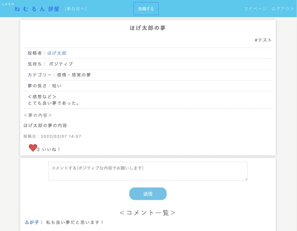
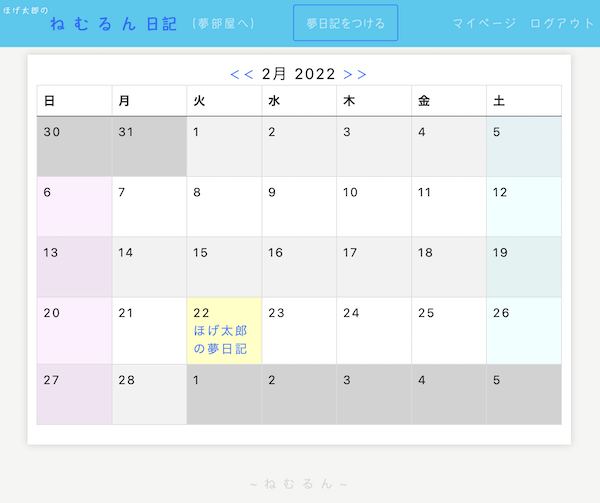

ねむるん（睡夢共有SNS・夢日記）
開発環境
Ruby / Ruby on Rails / MySQL / GitHub / Heroku / Visual Studio Code
-
概要
制作時間 160時間 URL https://nemuru.herokuapp.com/ ID hoge PASS 1111 -
動作テスト
テスト用アカウント
mail hoge@hoge PASS hoge65
OUTLINEアプリケーションの概要
オリジナルアプリケーションとして、睡夢を共有するSNS・夢日記を開発しました。
主な機能は、ユーザー登録機能、および睡夢のタイムライン機能、カレンダー機能です。
トップページにアクセスすると、睡夢のタイムラインが表示されています。睡夢のタイトルをクリックすると、睡夢の詳細について閲覧することができます。
ユーザー登録をすると、それらのタイムラインに自身の投稿をすることができます。タイムラインから投稿された睡夢の投稿者名をクリックすると、そのユーザーのマイページを閲覧することができます。
また、ヘッダーで夢日記のページに切り替えることができ、夢の記録をすることができます。
-
開発に至った経緯
睡夢に関して悩みを抱えている人たちを救済できるようなアプリがないことに課題を感じました。
学生時代の病院実習で、悪夢障害が原因で、うつ病を発症したという患者様を受け持たせてもらいました。そこで、初めて夢が原因で病気になることを知り、興味を持ちました。また、保健師の実習を通して、1次・2次予防の考えに興味がありました。これらの経験から1次・2次予防の観点から夢に関したアプリを制作したいと思いました。
睡夢に関して同じような悩みを抱えている人たちが夢を共有し励まし合うことで、メンタルケアにつながると考え、夢のツイートをすることで1次予防につながるのではと考えました。また、精神的に不安定な状態になると金縛りがよく起き、悪夢や明晰夢をよく見ることが知られています。さらに夢を見ること自体が睡眠の質が悪いという兆候であるため、夢日記で記録に残すことで、自分の日記から精神状態を客観的に把握・評価することができ、精神科などの医療機関への受診啓発など二次予防につながるのではないかと考えました。
以上より、1次・2次予防の考えを元に、睡夢共有SNS・夢日記アプリを制作したいと思いました。
-
開発で工夫したこと
1つ目がいいね機能・コメント機能です。ユーザー同士の励まし合いがしやすいようどちらの機能も非同期で実装しました。いいね数はトップ画面で確認できるようにしました。コメント機能はActionCableを用いてコメントが即時反映するよう実装しました。本番環境では、無料で使用できるAsyncアダプタを使用しています。
2つ目が検索機能です。ransackというRuby gemを用いて、複数キーワード検索やチェックボックスを用いた検索機能を実装しました。
-
今後実装したいと思っていること
1つ目がActiveAdminを用いて、管理機能を設けたいと考えています。SNSというサービスの特性上、不適切な投稿・コメントを削除できるようにしておく必要があると考えたためです。
2つ目が睡夢の数・カテゴリー別のグラフ化を考えています。投稿した夢と夢日記の夢の数やカテゴリーを集計して、グラフ化することで、夢の見る回数や内容の傾向を視覚的に把握することができます。これは前述した通り、二次予防的に自分の精神状態の把握にもつながると考えたためです。
現段階では、夢日記のカレンダーには日記のみの情報しか反映できていないため、まずは、投稿した夢もカレンダーに反映できるよう実装していきたいと考えています。